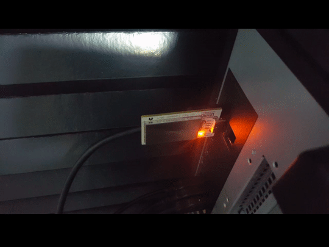

I probably don't need this, but reading about the OneRNG project made me curious enough to buy one. This is almost plug and go, with the firmware already preprogrammed on arrival. You can verify this via a given host software, which installs some udev rules and a Python script for verification. Unfortunately, most of it assumes a vanilla Linux (installing stuff to /sbin, etc) and I decided to bypass that and just issue direct serial commands to the device; after that I simply ran rngd in the background, disabling DRNG so I can be sure I'm feeding my system from the OneRNG:
$ rngd -r /dev/ttyACM1 -p /var/lock/rngd.ttyACM1 -d 1
Here's a clip of the LED on the OneRNG dimming as I deplete the entropy pool:
